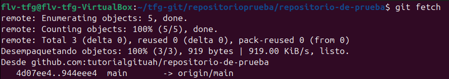
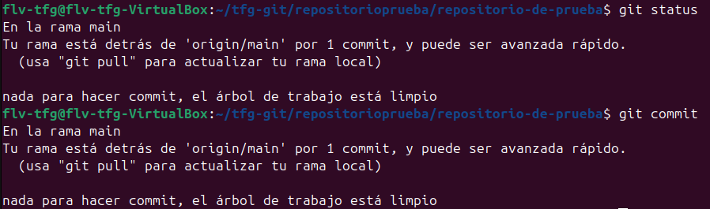
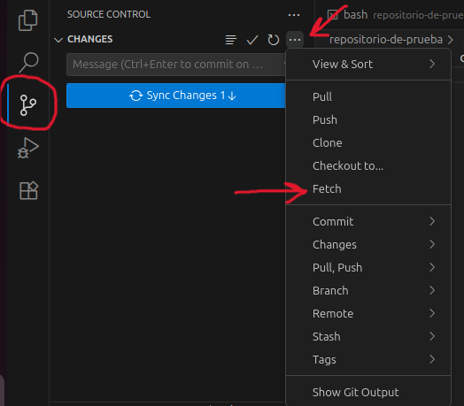

git fetchSe utiliza para descargar los cambios del repositorio remoto a tu máquina local sin integrarlos en tu rama actual. A diferencia de git pull, no realiza una fusión automática, lo que te permite revisar los cambios antes de incorporarlos.

Dentro de la carpeta ejecutamos lo siguiente:
git fetch
Esto descargará todos los cambios del repositorio remoto, pero no los integrará en tu rama local. Los cambios se guardan en ramas de seguimiento remoto (como origin/main), permitiéndote revisarlos antes de fusionarlos.
Como podemos ver, si hacemos git status o commit nos dice que vamos "1 pull por detras" ya que hemos descargado una preview de lo que hay en la rama actualmente.
Para descargar cambios de una rama remota específica:
git fetch origin (nombre de la rama)
Para descargar cambios de todos los repositorios remotos:
git fetch --all
Después de hacer fetch, puedes revisar los cambios y fusionarlos manualmente con git merge:
git merge origin/(nombre de la rama)
O combinar fetch y merge en un solo paso congit pull: git pull

En la ventana de control de git dentro de vscode, puedes hacer fetch haciendo click en el menú extendido (3 puntos horizontales) y seleccionar "Fetch". Esto descargará los cambios del repositorio remoto sin fusionarlos automáticamente. Luego puedes revisar los cambios antes de hacer merge o pull.